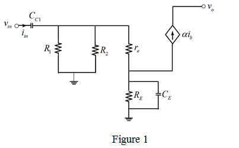
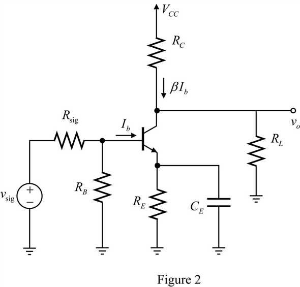

Calculate the value of the resistance,  .
.
Substitute for and for .
Refer to Figure P9.11 in the text book.
Draw the small signal equivalent for the circuit in Figure 1.

Calculate the value of the resistance, .
Substitute for and for .
Calculate the value of trans-conductance .
.
Substitute for  and for
and for  .
.
Calculate the resistance.

Substitute for  and
and  for
for  .
.
Calculate the input resistance .
.
Substitute for and  for
for  .
.
Therefore the input resistance,  is .
is .
Calculate the value of the resistance .
.
Substitute for .
.
Substitute for ,  for , for
for , for  , for
, for  and for
and for  .
.
Therefore, the mid-band gain,  is .
is .
Calculate the first break frequency.
Substitute for  , for , for .
, for , for .
Therefore, the first break frequency,  is .
is .
Draw the circuit diagram to calculate the break frequency, with effect of emitter resistance.

Write the expression for base current.
Calculate the expression for gain of the circuit.
 .
.
Substitute for  , for
, for  , for , for
, for , for  , for
, for and for
and for  .
.
Therefore, the second break frequency is.
is.
Calculate the third break frequency,  .
.
Substitute for  , for
, for  and for
and for  .
.
Therefore, the third corner frequency is .
Calculate the lower cutoff frequency, .

Substitute for , for and for .
Therefore, the lower cutoff frequency, is .